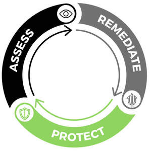

Trade Mark Journal No.2025/051 19 December 2025
UK00004305492 4 December 2025 (37,41,42)

- Class 37
- Installation, repair and maintenance of computers, computer hardware, computer firmware, computer peripheral devices, telecommunications apparatus, telecommunication instruments and systems, computer networks, electrical or electronic communication and control appliances and systems, safety and security systems and computer networks; consultancy, information and advisory services relating to the aforesaid.
- Class 41
- Educational and training services; educational and training services in the fields of information technology, cyber-security, business continuity, business continuity planning and disaster recovery; cybersecurity awareness training; computer security awareness training; computer training services; educational and training services in the field of risk management; training and education services for network and device security; information, advisory and consultancy services relating to all of the aforementioned services.
- Class 42
- Computer and information technology services; computer programming; computer software engineering; installation and maintenance of computer software; information technology support services; computer software technical support services; IT security, protection and restoration services; data security services; computer security system monitoring services; provision of security services for computer networks, computer access and computerised transactions; computer security services for protection against illegal network access; providing disaster recovery and business continuity services to others in the field of information technology, computers and computer networks; computer virus protection services; IT services for data protection; cloud-based data protection services; consulting services in the field of cloud computing networks and applications; consulting services in the field of computer security; computer security services for protecting against illegal network access; computer security services for access control to and monitoring of electronic communications; computer security services for the protection of computer networks and the detection of unauthorized access; computer security services for the protection of data and information; computer security services for the monitoring of computer systems for security purposes; computer security services for the administration of computer networks; computer security services for the administration of data and information; computer security services for the administration of electronic communications networks; computer security services for the administration of electronic communications systems; design and development of computer hardware, firmware, peripheral devices and software; design and development of computer networks; design and development of telecommunications networks; computer contingency planning services; computer data back-up and recovery services; computer media storage services; computer systems analysis; disaster recovery services for computer systems; disaster recovery services for data communications systems; computer network penetration testing services; software application testing services; computer network security assessment services; provision of computer network management services; computer software licence procurement and management services; advisory and consultancy services relating to all of the aforementioned services.
LoughTec Limited
Representative: Sellars Legal Limited